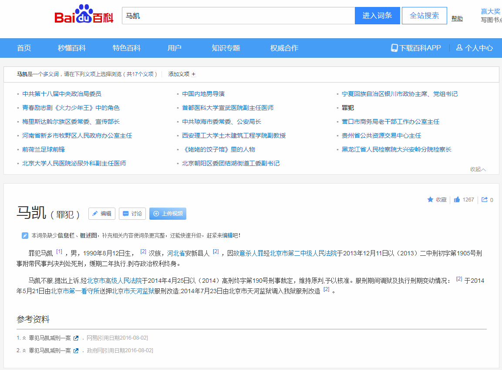

先备份素材：


继续备份素材：


于是决定把凯尔特词源的「bard
」一词所代表的「吟游诗人」含义，翻译为「说客」。这个字眼的拼写已经是欧罗巴洲情的共识了，包括鹅语「бард
」希腊语「βάρδος
」。
而另外一个意思「战马铠甲」则准备用来碰瓷市面上唤作「马凯」的家伙，还是老规矩「按照行政级别从上往下捋」：
- 男，汉族，1946年6月生，上海市人，1965年9月参加工作，1965年8月加入中国共产党，中国人民大学政治经济学系政治经济学专业毕业，研究生学历，经济学硕士学位。曾任中共第十八届中央政治局委员，国务院副总理、党组成员。
- 男，回族，宁夏同心人，1964年1月出生，1986年9月加入中国共产党，1981年7月参加工作，中央党校大学学历。现任宁夏回族自治区文化文史和学习委员会副主任，银川市政协主席、党组书记，银川滨河新区（经济试验区）党工委书记、管委会主任（兼）。
- ……

- 
未完待续